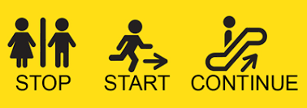

Developing Soft skills: Continue? Stop? Start?
Draft · 4 min read
In the present scenario, COVID has a very high impact on our lifestyle and above all, it will impact the way we grow and develop our soft skills in the future. The education system is disturbed and many questions are hovering above our head.Is the remote way of learning a trend or will it be “only” a new way to add to present pedagogical solutions? What are the dangers of believing that the “remote way” will be the way? While remote way is becoming the future of learning, learners are also getting into such a comfortable zone where developing soft skills will be the major task ahead of them.
From the present scenario which is reality 1, we have to jump to the Ideal scenario which is reality 2. And the question arises here is ‘How to move to the Ideal Scenario?’ João Barbosa,CEO of Dynargie says, “We should see what’s the probability level of concreteness that means what’s the probability to move to the ideal scenario. It would be very low if we want to have a disruptive change from reality 1 to reality 2. And to make it high we should see what are the things we should continue doing, what things should be stopped, and what things we should start doing.”

Things we should continue doing:
1. Some kind of classroom: A classroom is a place where we interact with others, to which our emotions are attached. So the key idea is we should have some kind of classrooms where we can interact with people, learn from them, share our ideas.
2. Teachers: We need to have teachers in our life as they are our mentors, they will always show us the right path. So the key idea is to be connected with your teachers.
3. Idol: We always need someone to be an example which motivates us to go ahead and achieve our goal. So the key idea is to follow your idol and work hard to be like him.
4. Learn through experience: Key idea is to step outside your comfort zone and start learning through doing some work on what you have learned. We can’t learn through e-learning or remote what we can learn through experiences.
5. Never be alone: The problem of remote is that we are alone. We always have 'stupid' ideas in our minds which we want to tell someone. So the key idea is to be connected with your friends, share your learning, experiences, ideas with them.
Things which could be stopped:
1. Ex-cathedra: Teachers cannot monologue. They have to stop the ex-cathedra way of teaching, ex-cathedra way of developing students. One should not be prepared just to listen, he should be prepared such that he can confidently put his views among others.
2. Hierarchy: It should be stopped. Because if we simply empower people and get them rallied around a meaningful purpose, they’ll work together without any need for defined leaders or managers — no power structure of any kind.
Things which should be started:
1. Development inside Non-Comfortable zone: If we develop soft skills inside a comfortable zone than we are just a paste of the copy being a copy to the teacher. Developing soft skills is the new copy-paste concept but here paste should be better than the copy. And this is only possible if we are in a non-comfortable zone. Perfect development of soft skills in realities do not exist because we have so many challenges, have slow down factors or say, we developed the soft skill but the company where we worked doesn’t have proper coaches so that we can behave according to what we were. But if we find out the things which should be continued, stopped and started, we can jump to the Ideal Scenario and may have a high probability level of concreteness.
" How much is COVID impacting and above all how will it impact the way we grow and develop our soft skills in the future? Is the remote way of learning a trend or will it be "only" a new way to add to present pedagogical solutions? What are the dangers of believing that the "remote way" will be "the" way? "

João Barbosa
CEO at Dynargie
References
If you want to hear more from corporate thought leaders, education visionaries and ecosystem builders, you can visit our you tube channel and connect with us for future events.